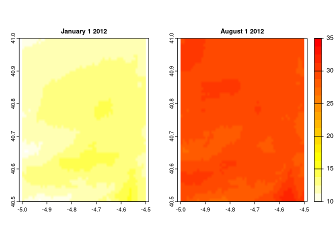

Easy access to high-resolution daily climate data for Europe
https://verughub.github.io/easyclimate/
Easily get high-resolution (1 km) daily climate data (precipitation, minimum and maximum temperatures) across Europe, from the European climatic database ftp://palantir.boku.ac.at/Public/ClimateData/.
Installation
# install.packages("remotes")
remotes::install_github("VeruGHub/easyclimate")Examples
Obtaining a data frame with daily climatic values for point coordinates:
library(easyclimate)
coords <- matrix(c(-5.36, 37.40), ncol = 2)
prec <- get_daily_climate(coords,
period = "2001-01-01:2001-01-03",
climatic_var = "Prcp")| ID_coords | x | y | date | Prcp |
|---|---|---|---|---|
| 1 | -5.36 | 37.4 | 2001-01-01 | 945 |
| 1 | -5.36 | 37.4 | 2001-01-02 | 12 |
| 1 | -5.36 | 37.4 | 2001-01-03 | 205 |
Obtaining a (multi-layer) raster with daily climatic values for an area:
library(terra)
#> terra version 1.3.4
#>
#> Attaching package: 'terra'
#> The following object is masked from 'package:knitr':
#>
#> spin
coords_poly <- vect("POLYGON ((-4.5 41, -4.5 40.5, -5 40.5, -5 41))")
ras_tmax <- get_daily_climate(
coords_poly,
period = c("2012-01-01", "2012-08-01"),
climatic_var = "Tmax",
output = "raster" # return raster
)
ras_tmax <- ras_tmax/100
plot(ras_tmax, col = rev(heat.colors(7))) 
See the package website for more extended tutorials: https://verughub.github.io/easyclimate/
CITATION
If you use easyclimate, please cite both the data source and the package as:
Werner Rammer, Christoph Pucher, Mathias Neumann. 2018. Description, Evaluation and Validation of Downscaled Daily Climate Data Version 2. ftp://palantir.boku.ac.at/Public/ClimateData/
Adam Moreno, Hubert Hasenauer. 2016. Spatial downscaling of European climate data International Journal of Climatology, 36: 1444-1458
Verónica Cruz-Alonso, Francisco Rodríguez-Sánchez, Christoph Pucher, Sophia Ratcliffe, Julen Astigarraga, Mathias Neumann and Paloma Ruiz-Benito. 2021. easyclimate: Easy access to high-resolution daily climate data for Europe. https://github.com/VeruGHub/easyclimate
To see these entries in BibTeX format, use ‘print(